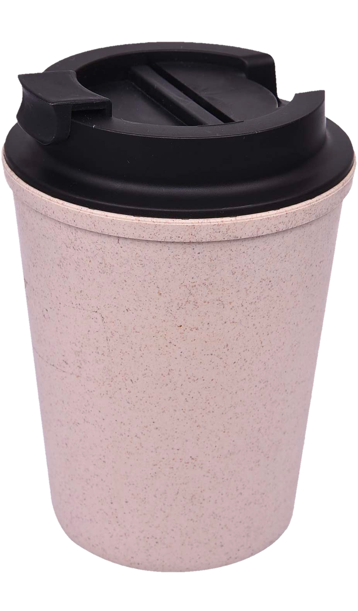

It's not just Coffee Mug
It's Sip n code
In word processing and desktop publishing, a hard return or paragraph break indicates a new paragraph, to be distinguished from the soft return at the end of a line internal to a paragraph. This distinction allows word wrap to automatically re-flow text as it is edited, without losing paragraph breaks. The software may apply vertical white space or indenting at paragraph breaks, depending on the selected style.
How such documents are actually stored depends on the file format. For example, HTML uses the
Learn More
